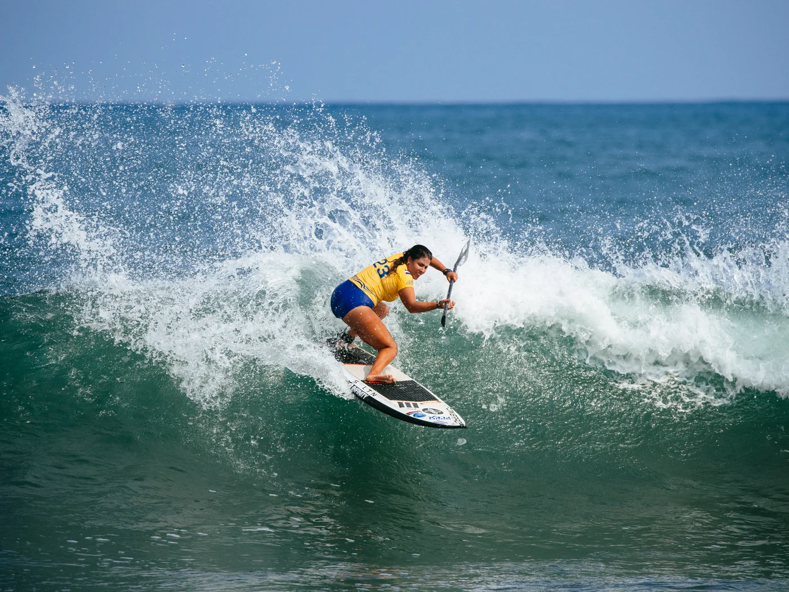
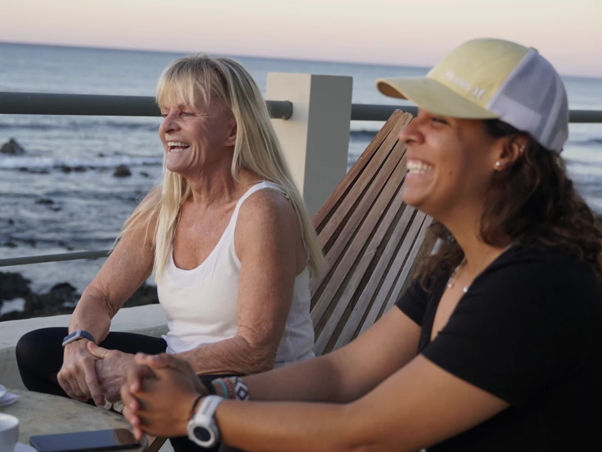
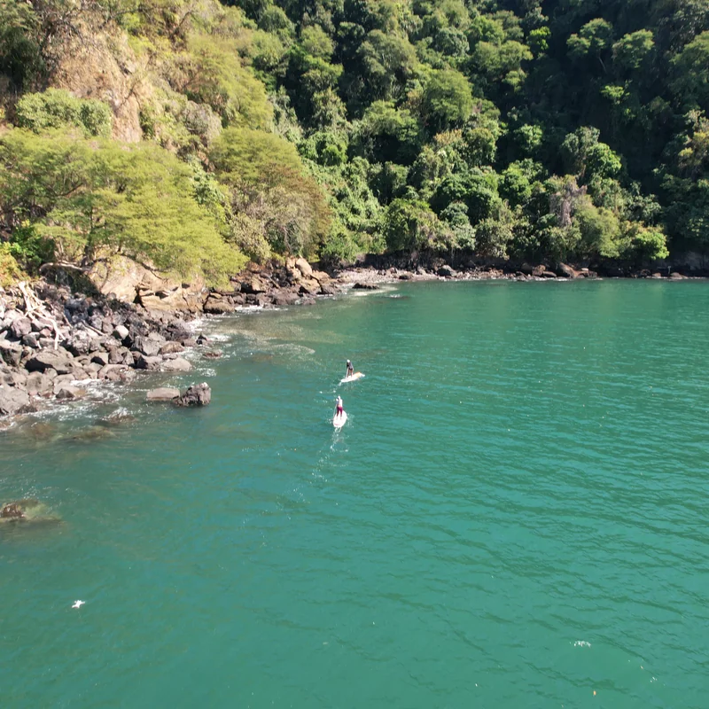

Playa Blanca
Donde nos quedamos y donde más surfeamos. Nos despertamos viendo esta playa hermosa.

Inicio › El retiro
Siete díasSiete días y seis noches en el Golfo de Fonseca, cupos limitados, y cada sesión grabada y revisada en grupo.
Siete días y seis noches en el Golfo de Fonseca, en La Unión, El Salvador. Rodeado de un grupo pequeño de surfistas de SUP y lejos de la aglomeración. Siete días en una casa frente al mar, con el pico de surf en la puerta, agua tibia y clima tropical casi todo el año.
No hay dos días iguales, porque el mar decide buena parte. Pero la forma se mantiene, y está armada para que estés en el agua cuando el agua está mejor y pensando en ella cuando no.
Temprano, antes de que entre el viento. Movilidad y respiración antes de que algo se moje.
Coaching técnico de stand up paddle en el pico que corresponda al día y a tu nivel, grabada sobre la marcha.
Comida fresca, tres veces al día, hecha para el grupo. Las necesidades alimenticias salen del formulario que llenás al reservar.
El grupo ve la mañana junto, y volvés al agua sabiendo cómo mejorar.
Las mismas que Joss usa como atleta profesional compitiendo en el mundo.
Cuando tomamos un tiempo para recuperarnos, también hacemos experiencias adicionales, como visitar islas, volcanes o salir en bote.
Diez minutos tranquilos que terminan importando más de lo que suenan.
Todo esto puede cambiar según el clima, el oleaje y cualquier circunstancia natural. Fluimos con el océano.

El Salvador aparece siempre entre los diez mejores destinos de surf del mundo, y el retiro tiene su base en la punta tranquila, lejos de la aglomeración.
Donde nos quedamos y donde más surfeamos. Nos despertamos viendo esta playa hermosa.
Olas suaves, y spots secretos. Hay que verlos con tus propios ojos.
Una de las olas más bonitas que tenemos cuando hay swell. En temporada de retiros es una ola muy divertida, con series amables.
Como Punta Roca, pero del otro lado del país. Con un swell perfecto, preparáte para la acción.

La Unión está sobre el Golfo de Fonseca, que El Salvador comparte con Honduras y Nicaragua. Salen viajes en bote a las islas, pasando por arrecifes y con volcanes en tres lados. Si tenemos suerte, hasta podemos ver ballenas o delfines.
El precio es por persona y cubre casi todo el viaje. La lista corta de lo que no cubre está debajo.
Todo lo de la lista es igual sin importar qué habitación tomés. Lo que mueve el número es si dormís solo, comparts con una persona, o comparts con dos.
| Ocupación | Por persona | Notas |
|---|---|---|
| Habitación triple | Desde $3,950 | Una habitación triple para tu tribu. |
| Habitación doble | Desde $4,200 | Dos personas compartiendo. Este es el precio por persona si venís con tu compañero de surf. |
| Habitación privada | Desde $4,720 | Tu propia habitación. La opción más elegida por quien viaja solo. |
Si querés viajar liviano, o se te complica traer tu equipo, te ofrecemos tabla y remo de SUP por la semana con un costo adicional. Mirá nuestro quiver.
| Retiro | Fechas |
|---|---|
| Diciembre 2026 | 13 al 19 de diciembre de 2026 |
| Enero 2027 | 24 al 30 de enero de 2027 |
| Febrero 2027 | 21 al 27 de febrero de 2027 |
| Marzo 2027 | 14 al 20 de marzo de 2027 |
No hay botón de pago, a propósito. Los cupos de cada retiro son limitados, así que empieza con una conversación.
Mandá un correo a nuestro equipo. Contanos más o menos dónde estás en tu paddle y qué estás buscando.
Una llamada, para que te responda todo y para ser honesta con vos sobre si este retiro es el correcto. A veces la respuesta es coaching uno a uno primero.
Pagás el 25 por ciento para guardar tu lugar, y el saldo dos meses antes de que empiece el retiro.
Objetivos, experiencia, necesidades alimenticias. Es con lo que se arman el coaching y la cocina antes de que llegus.
Vamos a estar esperándote en el Aeropuerto Internacional de El Salvador.
| Pregunta | Respuesta |
|---|---|
| Grupo mínimo | 3 personas. Por debajo de eso el retiro se cancela y se devuelve el dinero, o la reserva se convierte en coaching uno a uno si ya hay vuelos comprados. |
| Grupo máximo | 6 personas, y a veces podemos sumar una más. |
| Anticipo y saldo | 25 por ciento para reservar, y el saldo dos meses antes del inicio. |
| Tarjetas aceptadas | Visa o Mastercard. |
El Salvador es conocido por ser un país seguro y uno de los diez mejores destinos de surf del mundo. Nos aseguramos de que conozcas los lugares más icónicos del país.
Es necesario reservar con 3 meses de anticipación o antes, pagando el 25% del monto final cotizado. De lo contrario, dependerá de la disponibilidad.
El pago total debe hacerse dos meses antes de la fecha de inicio.
Waveswell es un retiro familiar apto para todos. Las sesiones de surf están armadas para gente que ya practica stand up paddle, y los amigos, hijos y seres queridos que no surfean son muy bienvenidos a acompañar la semana.
Todos nuestros huéspedes son siempre bienvenidos, y es responsabilidad de cada visitante consultar con su médico antes de reservar el retiro. Para nosotros será un gusto ser parte de tu proceso.
Para crear un ambiente familiar, tus hijos y tu pareja son bienvenidos. Si lo necesitás, te podemos ayudar a conseguir una “nanita” que cuide a tus hijos. Amigos, niños y seres queridos que no surfean son muy bienvenidos. Escribíle a Joss y ella te ayuda con un precio para ellos.
Durante el retiro se explican diferentes herramientas de alto rendimiento, buscando impactar positivamente en tu desempeño físico y mental.
Claro que sí, y te podemos ayudar con el proceso.
El seguro de viaje o de salud no está incluido. Es altamente recomendado tomarlo antes de venir, porque el SUP surf es un deporte extremo y siempre buscamos estar preparados para cualquier circunstancia.
No, los retiros no incluyen vuelos; los huéspedes son responsables de cubrir ese costo. Te podemos ayudar a coordinar la logística con nuestra agencia de viajes aliada.
Desafortunadamente de momento no se ofrecen descuentos, pero podés estar atento a nuestros canales de comunicación por posibles promociones y descuentos.
Si el cliente cancela el retiro, no habrá reembolso.
Si el cliente solicita cambiar las fechas 2 meses antes de la fecha inicial del retiro, habrá una penalidad del 50% de la cotización final. Dentro del mes previo a la fecha inicial, la penalidad será del 70% de la cotización final. Entre 24 y 1 día antes de la fecha inicial, la penalidad será del 100% de la cotización final.
Necesitás poder nadar por tu cuenta, y las sesiones de surf están armadas para gente que ya practica stand up paddle. También recomendamos un seguro de viaje privado que cubra cancelación del viaje, atención médica de emergencia y evacuación médica, y conviene arreglarlo apenas se confirme tu reserva.
Ponéte en contacto con Josselyn Alabi por correo a jossalabi@waveswellretreats.com.